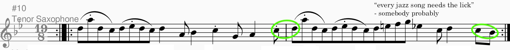

↩ go back!
How I write in weird time signatures
19/8, 23/8, 29/8, 33/8, what's next i don't know | 20-6-2026
I've been writing a lot of songs in unusual time signatures lately (I can't stop please help) and I feel the need to show other people how I do it.
1. Picking a time signature & divisions
Picking a time signature is easy: choose a number, choose a note duration; literally impossible to mess up! See:
2 = 2
2 + 2 = 4
2 + 2 + 2 = 6
... and so on, therefore sums of 2s will get you all even numbers greater than or equal to 2
3 = 3
3 + 2 = 5
3 + 2 + 2 = 7
... and so on, therefore sums of 2s with one 3 added will get you all odd numbers greater than or equal to 2
Thus, if you combine these two sets together, you get all integers greater than or equal to 2
For this example, I'll use Sol i Luno, as its timesig is relatively small (19/8). 19/8 in this case is split up into five 3s and two 2s:

5(3)+2(2) visualised
However, to keep things interesting, it's best to pick a prime amount of notes > 5 to make it wacky and whimsical (7, 11, 13, 17, 19, 23, 29, 31, etc.).
2. Chords & Key
Throw shit at a wall and see what sticks; ya like jazz? No? Too bad! Do some weird things with the progression anyway: put it in some diatonic mode other than major or minor, use phrygian dominant for all I care!

aka "phrygian okay is doing end it" ga /ref
Although I usually use power chords (BOOOO GUITARIST!!!) SHUT UP just because it's easier to harmonise (BOOOO BRITISH!!!) SHUT THE HELL UP with...
...which also means that all of the chords you see on this page aren't actually correct :D (sorry)
3. Melodies
just bullshit it /j
You can practically do whatever you want as long as it sounds good, HOWEVER, the rhythm should not sound like it's cut off:

Fig. 1: to make your work look better just put green checkmarks around it instead of red Xs
i got bored of manually drawing the images; ooooooh unreleased song jumpscare!!!11!11!1!!
As you can see in figure 1 (or can't see if your internet is that bad), the eighth notes go well together; had they been sandwiched inbetween quarter notes, they would have felt cut off &/ halved.
Take the saxophone part in Sol i Luno, for example:
Watch how awkward I can make it by just changing a few note lengths!
4. Conclusion
anyways that ends my totally epik guide to writing in weird timesigs